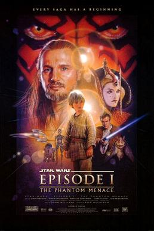

- IV – A New Hope (1977)
- V – The Empire Strikes Back (1980)
- VI – Return of the Jedi (1983)
- I – The Phantom Menace (1999)
- II – Attack of the Clones (2002)
- III – Revenge of the Sith (2005)
The Phantom Menace
Star Wars is an American epic space opera media franchise, centered on a film series created by George Lucas. It depicts the adventures of characters "a long time ago in a galaxy far, far away".

Star Wars: Episode I – The Phantom Menace is a 1999 American epic space opera written and directed by George Lucas, produced by Lucasfilm and distributed by 20th Century Fox.
It is the first installment in the Star Wars prequel trilogy and stars Liam Neeson, Ewan McGregor, Natalie Portman, Jake Lloyd, Ian McDiarmid, Anthony Daniels, Kenny Baker, Pernilla August, and Frank Oz.